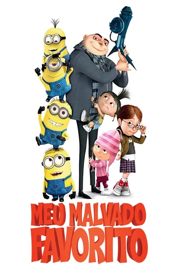
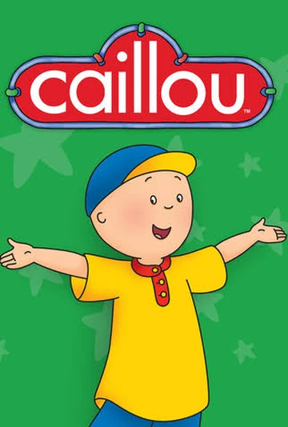
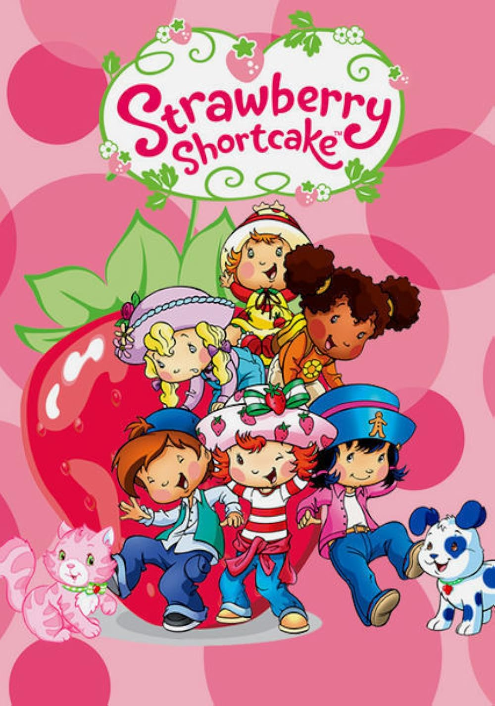

Olá! Meu nome é Joanna, tenho 15 anos e vim por meio deste site mostrar e falar um pouco sobre os meus filmes,séries e desenhos favoritos para vocês

"Meu Malvado Favorito" (2010) é uma aclamada animação que narra a jornada de Gru, um supervilão rabugento e solitário que planeja o maior assalto do século: roubar a Lua. Para consolidar seu posto como o maior criminoso do mundo e superar seu jovem rival Vetor, Gru conta com o apoio do cientista Dr. Nefário e de seu carismático exército de Minions, pequenas criaturas amarelas obstinadas em servir ao mestre mais desprezível que encontrarem. O enredo ganha uma reviravolta quando Gru decide adotar três irmãs órfãs — Margo, Edith e Agnes — com o único propósito de usá-las como peões em seu plano mirabolante para invadir a fortaleza de Vetor. No entanto, a convivência diária com a inocência e o afeto genuíno das meninas começa a derreter o coração de gelo do vilão. Gradualmente, Gru se vê dividido entre a ambição de sua carreira criminosa e as responsabilidades de uma paternidade inesperada. No clímax da história, quando Vetor sequestra as garotas, Gru não hesita em abandonar seus objetivos egoístas e arriscar a própria vida para salvá-las. O desfecho consolida sua total transformação: ele desiste da vilania, adota as meninas definitivamente e descobre o verdadeiro sentido do amor familiar, provando que o afeto é capaz de redimir até o mais obstinado dos malvados.

"Caillou" é uma famosa série de animação canadense baseada nos livros de Christine L'Heureux. O desenho acompanha a rotina de um garotinho de quatro anos, curioso e ingênuo, que descobre o mundo e enfrenta as pequenas e grandes complexidades da primeira infância. Marcada por um ritmo calmo e cenários que imitam ilustrações de livros infantis, a produção se destaca por apresentar o ponto de vista puramente infantil diante de situações cotidianas, como ir à escola, lidar com frustrações ou brincar com sua irmã caçula, Rosie. Uma das principais características do protagonista é a sua calvície marcante. Embora tenham surgido teorias na internet sugerindo que ele estaria em tratamento contra o câncer, os criadores esclareceram que Caillou foi inicialmente concebido como um bebê de nove meses nos livros originais. À medida que a narrativa avançou para retratá-lo mais velho, manteve-se o design sem cabelos para preservar a identidade visual já consagrada pelo público. Apesar de seu forte apelo educativo e foco em valores como paciência e respeito, a série passou a dividir opiniões ao longo dos anos. Enquanto muitos pais e educadores elogiavam a abordagem realista das emoções infantis, parte do público criticava o comportamento do personagem. Caillou frequentemente exibia episódios de birra, teimosia e choro fácil, e o fato de seus pais reagirem de forma extremamente permissiva gerou debates sobre a influência do desenho no comportamento das crianças que o assistiam.

A versão de 2003 da série animada "Moranguinho" (Strawberry Shortcake), produzida pela DiC Entertainment, é considerada por toda uma geração como o reboot mais marcante e nostálgico da franquia. Afastando-se do formato dos antigos especiais de TV, esta produção reestruturou o universo da personagem para os anos 2000, modernizando o visual dos habitantes da Morangolândia (Strawberryland) com roupas características da época, como calças jeans de cintura baixa, sem perder a essência mágica e colorida que consagrou a marca. Na história, Moranguinho vive em uma encantadora casa em formato de morango gigante junto com sua irmãzinha Maçãzinha e seus fiéis animais de estimação, a gata Pudim (Custard) e o cãozinho Rocambole (Pupcake). A trama central acompanha o cotidiano dessa carismática e otimista protagonista, que atua como uma verdadeira líder comunitária ao lado de suas melhores amigas — como Laranjinha, Uvinha, Limãozinho e Biscoitinho —, além de seu pônei Pão de Mel. Juntas, elas embarcam em pequenas viagens e aventuras cotidianas explorando as terras vizinhas, organizando festas de aniversário, lidando com os ciúmes entre os bichinhos ou formando bandas de música. O grande charme da narrativa está na forma como o grupo resolve os impasses do dia a dia: em vez de grandes batalhas ou vilões ameaçadores, os episódios se focam na resolução de conflitos interpessoais por meio do diálogo, reforçando o valor da empatia, do compartilhamento e da verdadeira amizade. Exibida originalmente ao longo de quatro temporadas, a série também se destacou pela sua marcante trilha sonora e por expandir as fronteiras da Morangolândia, levando as personagens a conhecerem novas culturas em episódios especiais de viagem. Ao equilibrar o lúdico com lições valiosas de inteligência emocional para o público infantil, a animação de 2003 consolidou-se como um clássico da televisão aberta e fechada no Brasil, deixando uma lembrança afetiva profunda em todos que cresceram acompanhando aquele doce universo.